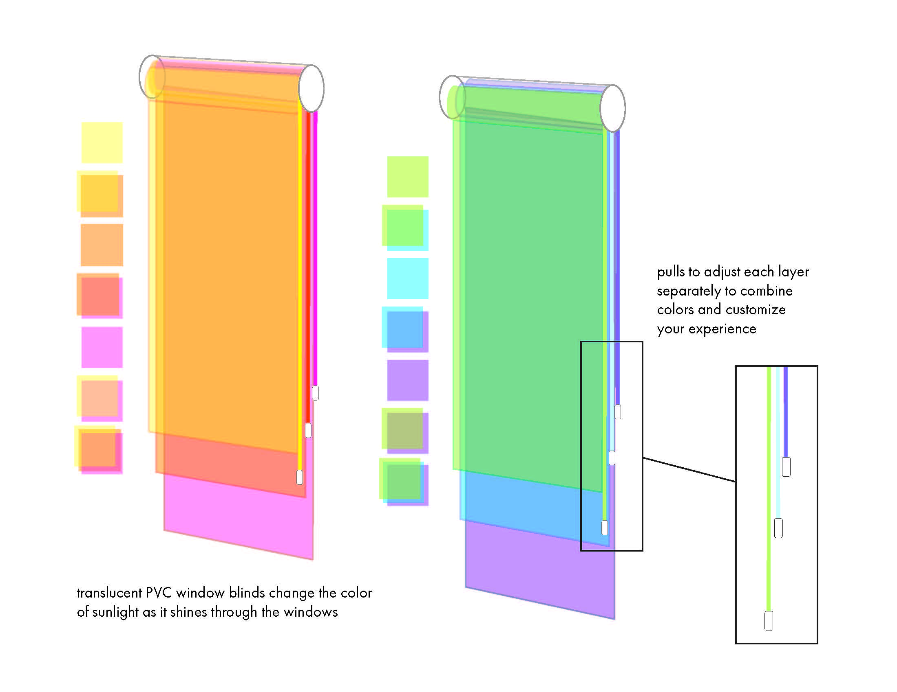
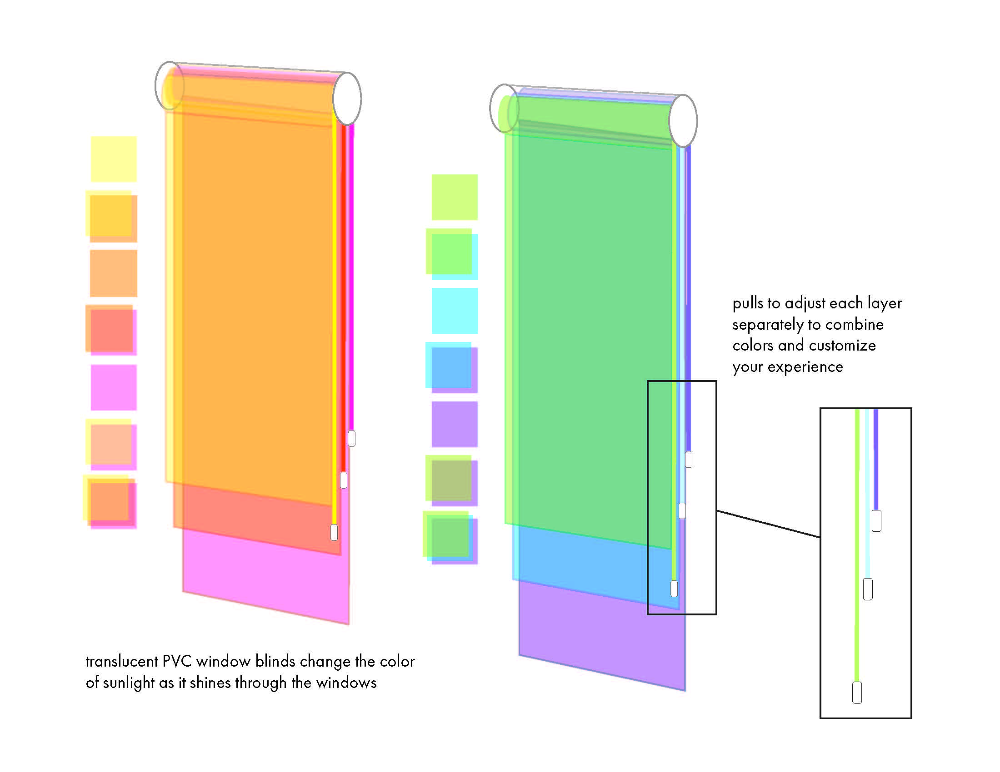

Welcome to 5D: Experience and Drawing
This class was my first real introduction to net art. In high school, I was obsessed with Rafaël Rozendaal's net art websites. I thought it would be cool to make art like that one day, but I didn't know what net art was called or how to find other works like it. In 5D, I started learning the vocabulary and context around net art.
I entered Northeastern as a CS and Media Arts major, but switched to CS and Design in my second semester in part because the description for 5D Fundamentals sounded so interesting. I'm so glad I did -- taking this class and working with you was one of the most formative experiences I had here.

Reading Assignment 1: Design Noir
This reading expanded the way I looked at design. I realized for the first time that design could be conceptual, which was amazing because I loved conceptual art. Being in your 5D class helped me see the intersections between art, design, and coding. I had come into college as someone who really liked painting, and I was having a hard time figuring out how art fit with my major. This class helped me see the possibilities and crossovers, and made me so much more excited about CS and Design.
Due Monday, 1/14 by Noon
Project 1: Fictional Design
I loved this project. My fictional object was called the
Third Eye, and it randomly recorded the user for 10 seconds each
day and stitched it together to form an unfiltered record of the
user's daily existence. As part of it, I recorded myself for hours
every day and used a random generator to choose 10 second clips to
stitch together. It's interesting to look back on, because the way
I was working 3 years ago was similar to how I work now,
physically experiencing the processes I make up. It's kind of
comforting to look back and see that I've always been interested
in making art about mundane, everyday moments. My skills and the
quality of my output have increased, but I'm still thinking about
similar ideas. This project was an important step in that
trajectory. Thank you.
Sketchbook/Proposal Due: Monday, 1/21 by Noon
Project Due: Beginning of class, Tuesday, 1/29

 

Project 2: Site-Specific Design
This project was so fun! I remember thinking it was so cool
that design could cross into 3D space. It seems obvious, but I
always though 3D belonged to architects.
Proposal Due: Noon, Monday, 2/11
Project Due: Beginning of class, Tuesday, 2/26
Who are you?: Your first programming assignment...
This assignment was the first time I ever used HTML and CSS.
I remember sitting in Snell, painstakingly working on my website.
It was so fun customizing my intro page and looking up different
tags! You made it really manageable and fun to get started with
web development with this project. It's funny how things
snowball...what started here turned into a personal project to
make my own portfolio website, which helped me get a web
development coop, which helped me get a second web development
coop, which turned into a full-time front-end development job
post-grad. Freshman year me would be so surprised I'd get
paid to do this one day. If I ever do that origin story zine
project, I'm including this one in there.
https://jennifergradecki.com/5D-2019.html
Project 3: Tactical Website
HAHA, does this site look familiar? :) One more spoof site
for the road.
Proposal Due: Noon, Monday 3/18
Project Due: Beginning of class, Tuesday 3/26
Writing Response 4: What do you like?
It was really fun and helping to see the range of net art doing this assignment. I loved many of the things I looked at, but the pigeons from jodi dot org, and Olia Lialina's interactive story are two that I still remember and think about.
Due Monday, 4/1 at Noon


Net.Art Final Project
I loved every project in this class, but if I had to pick a favorite, it would be this one. Thank you for your guidance while I was working on this. I made the first version of this using your interactive fiction template, and revamped it last year using React and an API for the videos. I'm still really proud of this project, and proud of how far I've come. You played a huge role in helping me discover mediums that I liked working in and helping me get started. Thank you <3 This class set me on the path I'm on today.
Proposal Due: Monday 4/8, at Noon
Project Due: Beginning of class, Wednesday, 4/16
NEXT: PART 2 - THE END(ISH)